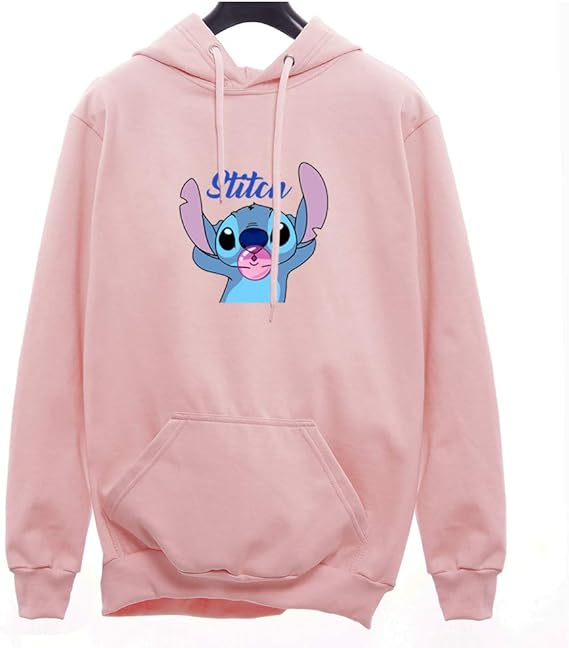
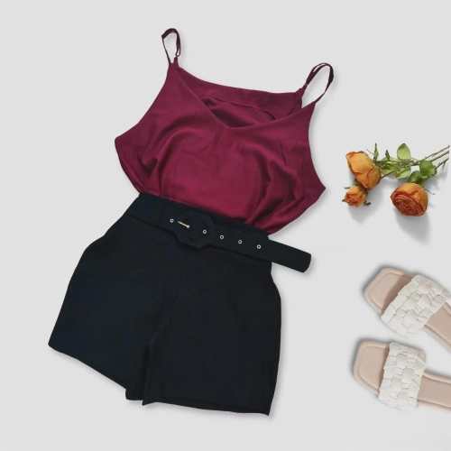

1. Praticidade Sem dúvidas, uma das maiores vantagens de uma loja de roupas online é que você pode comprar de onde quiser, seja em casa, no trabalho, no metrô... só precisa de um aparelho conectado à Internet. Logo, fica muito mais fácil incorporar isso à sua rotina, ao invés de planejar uma ida à loja física (o que nos grandes centros pode consumir algumas horas do seu tempo). Com isso, você ganha mais tempo livre para gastar com outras atividades muito mais prazerosas, como passar um tempo com a família ou organizar um programa com os amigos.
2. Eficiência Quando compramos online, temos a tendência de fazer escolhas muito mais eficientes e assertivas do que quando estamos comprando pessoalmente. E o motivo é bem simples: no e-commerce é possível pesquisar exatamente o tipo de peça que estamos procurando, na cor que nos interessa e com determinada característica, tudo isso em alguns segundos. Por outro lado, quando estamos em lojas físicas, há sempre a dificuldade de encontrar a peça ideal, que seja do modelo, tamanho e cor que você precisa. E, muitas vezes, acabamos comprando “qualquer coisa”, por não encontrarmos o que queríamos de verdade. 3. Liberdade Sabe quando você só quer dar uma olhada nas vitrines para procurar algo que te interesse? Pois isso também é muito mais fácil e rápido no online. Você pode passar horas, se quiser, navegando pelas categorias dos sites e escolhendo quais peças fazem mais o seu estilo. Além disso, também pode definir filtros específicos de preço, cor e tamanho, sem ter que dar explicações para um vendedor. E ainda pode sair sem levar nada depois, que ninguém vai te julgar por isso.
4. Variedade As lojas físicas costumam ter uma limitação de espaço que acaba impactando diretamente no seu estoque. O que não ocorre, por exemplo, nas lojas online. Logo, é bem comum encontrar muito mais opções de modelos e tamanhos online, do que presencialmente.
5. Sem bar não está limitada a fazer escolhas na cidade onde mora, nem precisa perder um dia todo para ir até os grandes centros. Oul>
seja, não tem desculpa para ficar de fora da última tendência de moda, só porque ela demorou para chegar até você.
 